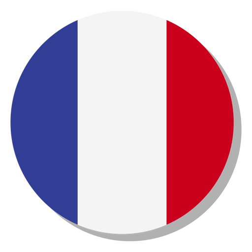
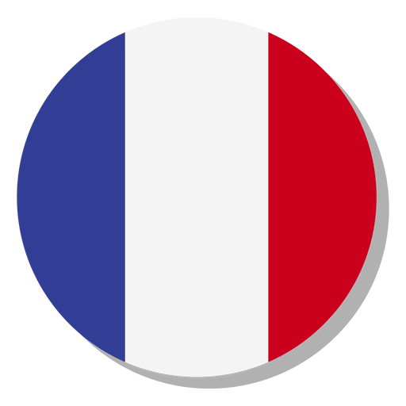
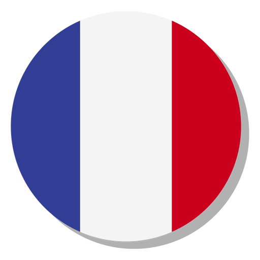
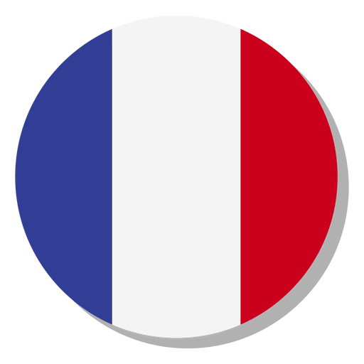

Cine suntem?
Centrul de excelenţă, având drept obiect cercetarea în domeniul francofoniei, se constituie pe baza unui nucleu existent deja, şi anume Centrul de Studii francofone care funcţionează pe lângă Catedra de Limbi romanice a Facultăţii de Litere, Istorie şi Teologie începând din anul 1994.
Ca centru de excelenţă, CENTRUL DE STUDII FRANCOFONE îşi propune să deruleze un program complet şi coerent de cercetare în domeniul francofoniei din perspectiva interculturalităţii şi a interdisciplinarităţii, cu referire la mariile arii culturale din spaţiul francofon. Un loc aparte ocupă în programul Centrului proiectele vizând cercetarea contribuţiilor româneşti în domeniul francofoniei.
Pe lângă profesori şi conferenţiari de la Catedra de Limbi romanice, cu o bogată activitate de cercetare, Centrul atrage la realizarea proiectelor sale cadre didactice tinere, doctoranzi şi studenţi de la studiile post universitare.
Rezultatele cercetării vor fi valorificate în continuare în revista Dialogues francophones publicată de Centrul de studii francofone ncepând din anul 1995. Se are în vedere de asemenea continuarea publicării unor cărţi despre fenomenul cultural francofon în lumea contemporană şi a unor studii pe teme de francofonie în reviste ştiinţifice din ţară şi din străinătate precum şi organizarea de manifestări ştiinţifice cu participare naţională şi internaţională.
Cum ne contactaţi?
Centrul de Studii Francofone
Universitatea de Vest Timisoara
Bv. V. Parvan, nr. 2-4, 300223, Timisoara
Tel/Fax: 0256-493886
e-mail; ceftim@rectorat.uvt.ro